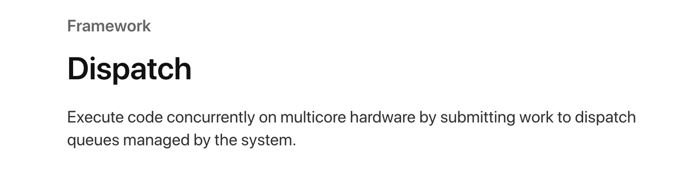
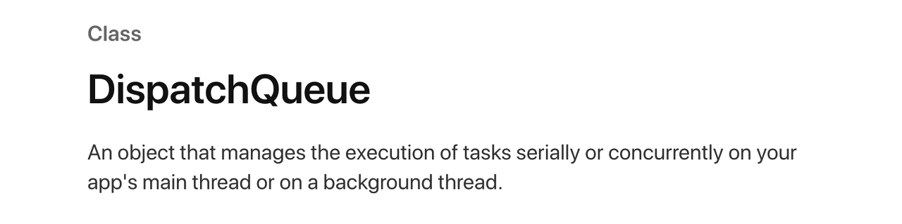
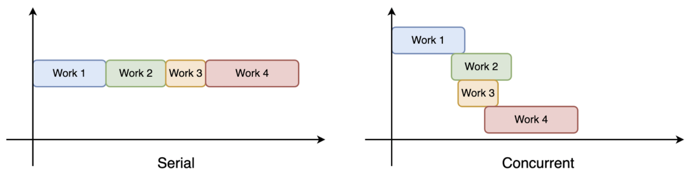
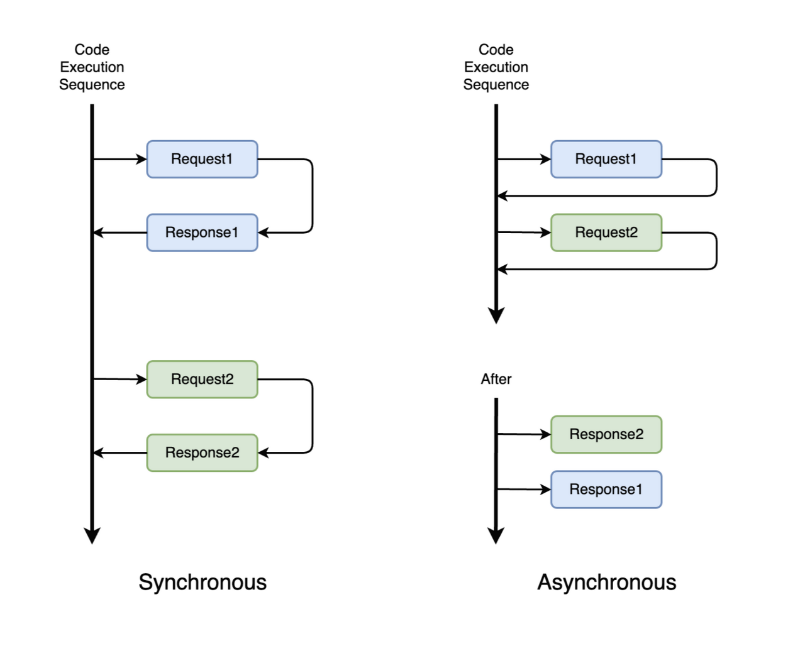
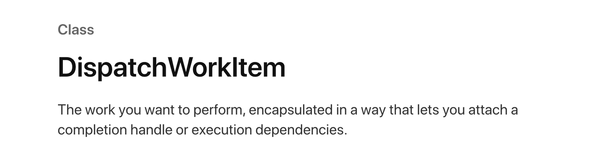

GCD(Grand Central Dispatch)
iOS의 동시성 프로그래밍을 위한 Dispatch Framework(GCD)에 대해 정리한다.
Table of Contents
Dispatch Framework
Dispatch framework는 멀티 코어 하드웨어에서 동시성 프로그래밍을 지원한다.

동시적으로(concurrently) 실행시킬 작업들을 시스템이 관리하는 Dispatch Queue에 전달하기만 하면, 시스템이 dispatch queue에서 작업을 꺼내 사용 가능한 thread에 할당한다. Dispatch queue가 시스템의 중심에서(central) 작업을 thread에 전달(dispatch)하기 때문에 GCD(Grand Central Dispatch) 라고 부른다. 직역하면 ‘거대한 중앙 전달자’ 정도가 되겠다.
GCD가 도입 이전에는 개발자가 직접 thread를 관리해야 했지만, dispatch queue를 사용하면서 ‘무엇을 할 것인가(What)’에 더 집중할 수 있게 되었다.
Dispatch Queue

DispatchQueue는 app의 main thread 또는 background thread에 작업(tasks)들을 순차적(serially) 또는 동시적(concurrently)으로 전달한다.
Dispatch queue에 할당된 작업들은 시스템이 관리하는 thread pool에서 실행된다. Dispatch queue에 들어있는 작업들은 시스템에 의해 현재 사용 가능한 thread에 전달되어 실행되기 때문에, 어떤 작업이 어느 thread에서 실행될 지는 알 수 없다. 단, main queue에 할당된 작업들은 main thread에서 실행되는 것이 보장된다.
Application의 UI와 관련된 code는 main run loop에서 동작한다. Run loop는 main thread에서 동작하기 때문에, 해당 작업은 반드시 SerialQueue에 할당하여 main thread에서 실행되어야 한다.
SerialQueue와 ConcurrentQueue
Queue에 들어 있는 작업들을 thread에 전달하는 방식에 따라 SerialQueue, ConcurrentQueue로 구분한다.
SerialQueue
Queue에 있는 작업들을 순차적으로 thread에 전달되어 실행된다. 현재 queue에서 실행 중인 작업이 있다면, 그 작업이 모두 끝난 뒤에 다음 작업이 thread에 전달되어 실행된다.1
2let mainQueue = DispatchQueue.main // Main queue는 serial queue에 해당한다
let serialQueue = DispatchQueue(label: "ckim.serialQueue")ConcurrentQueue
Queue에 있는 작업들이 동시에 thread에 전달되어 실행된다. 작업들은 queue에 들어 있던 순서대로 실행되지만, 어떤 작업이 먼저 끝날지는 알 수 없다.1
2let globalQueue = DispatchQueue.global() // Global queue는 concurrent queue에 해당한다
let concurrentQueue = DispatchQueue(label: "ckim.serialQueue", attributes: [.concurrent])
Synchronous와 Asynchronous
Dispatch queue에 들어 있는 작업들은 process에서 실행되는 방식에 따라 동기(synchronous) 또는 비동기(asynchronous) 작업으로 구분된다.
Sync
Dispatch queue에 작업을 할당할 때 동기적으로(sync) 실행되도록 할당하면, 해당 작업이 실행되는 동안에는 프로그램이 다른 작업을 실행시킬 수 없다.1
DispatchQueue.global().sync { ... }
Async
Dispatch queue에 작업을 전달할 때 비동기적으로(async) 실행되도록 할당하면, 해당 작업은 background에서 실행되어 프로그램이 다른 작업을 실행시킬 수 있다.1
DispatchQueue.main.async { ... }

DispatchQueue에 할당하는 작업들은 sync 또는 async하게 실행될 수 있지만, main dispatch queue에 할당되는 작업들은 반드시 async하게 실행되어야 한다.
Main queue에 할당된 작업은 main run loop에서 실행되는데, sync하게 작업흘 할당한다면 UI update 등의 작업이 정상적으로 동작할 수 없다. 실제로 main queue에 sync 작업을 할당하려고 하면 thread error가 발생한다.
1 | DispatchQueue.main.sync { ... } // error |
QoS(Quality of Service)
QoS는 서비스 품질(quality of service)를 고려하여 dispatch queue에 할당된 작업들의 우선 순위를 조정하기 위한 값이다. Background thread에서 동작할 비동기 작업을 할당할 때, 작업의 종류와 의도에 맞게 qos를 지정하면 한정된 시스템 자원을 효율적으로 사용할 수 있다.
높은 우선순위를 갖는 작업은 더 빨리 실행되며 더 많은 리소스와 에너지를 사용하기 때문에, 빠르고 에너지 효율이 높은 앱을 만들기 위해서는 qos 우선순위를 적절하게 지정해야 한다. QoS는 6가지 값을 갖는데, 사용자와 직접 상호작용하는 작업일수록 높은 우선순위를 갖는다.
- User Interactive
애니메이션, event 처리, UI 업데이트 등 사용자와 직접적인 상호작용을 하는 작업들을 위한 분류. 사용자 경험을 높이기 위해 즉각적으로 반응해야 하므로 가장 높은 우선순위를 가짐. - User Initiated
User interactive처럼 반응성 및 성능에 중점을 두지만, 요청에 대한 응답 시간이 비교적 긴 작업에 사용할 수 있다. - Default
기본값. 일반적인 작업들은 default 우선순위를 갖도록 실행한다. - Utility
사용자가 적극적으로 확인하지 않는 작업을 위한 분류. 우선순위가 낮지만 빠른 시간 내에 결과를 반환해야 할 때 사용할 수 있다. 성능과 전력 효율을 효과적으로 관리할 수 있다. - Background
사용자가 신경쓰지 않는 동안에도 계속 유지되어야 하는 작업을 위한 분류. Background 동기화 작업 등에 사용할 수 있다. - Unspecified
QoS를 지정하지 않음. 시스템이 작업에 따라 qos를 추론하여 우선순위를 결정한다.
Dispatch Work Item
DispatchWorkItem은 dispatch queue 또는 dispatch group에서 실행될 수 있는 작업을 나타내는 object이다. Closure block 대신 DispatchWorkItem object를 할당할 수 있다.

작업 실행: perform
DispatchWorkItem은 작업을 정의하고 perform() method로 작업을 실행시킨다.
1 | let workItem = DispatchWorkItem { |
작업 대기: wait
wait() method를 사용하면 해당 작업이 비동기로 실행되더라도, 끝날 때 까지 process 실행을 대기한다.
1 | let workItem = DispatchWorkItem { |
wait(timeout:) method로 timeout parameter를 전달하면, 해당 시간 만큼만 대기한다.
1 | let workItem = DispatchWorkItem { |
작업 취소: cancel
cancel() method를 사용하면 실행되기 전 또는 현재 실행중인 작업을 취소할 수 있다. cancel() method는 비동기적으로 실행되어야 하므로, 만약 중간에 취소될 수 있는 작업이라면 DispatchWorkItem의 작업 블록 내에서 workItem.isCancelled로 현재 작업이 취소되었는지 체크해야 한다.
1 | // 시간이 많이 걸리는 작업 정의 |
작업 연결: notify
notify(queue:execute:) method를 사용하여 특정 queue에 할당된 작업의 실행이 끝났을 때, 다음에 실행시킬 작업을 지정할 수 있다.
1 | let workItemA = DispatchWorkItem { |
Dispatch Group
DispatchGroup은 여러 개의 작업들을(group of tasks) 하나의 unit으로 관찰할 수 있게 한다.
비동기로 실행되는 작업들은 모든 작업이 끝나는 시점이 언제인지 알 수 없다. DispatchGroup을 사용하면 비동기로 동작하는 작업들을 하나로 묶어서 관찰하여, 모든 비동기 작업이 끝나는 시점을 알 수 있다.
작업 묶기 : enter, leave, notify
enter()와 leave() method를 사용해서 dispatch group에 포함될 작업의 시작 및 종료를 지정한다. enter()를 호출할 때 마다 내부적으로 count가 증가하고, leave()를 호출하면 감소한다. Count가 0이 되면 group에 포함된 작업들이 모두 종료되었다고 판단한다.
1 | let group = DispatchGroup() |
작업 묶기: sync(group:), async(group:)
enter(), leave() method 대신 DispatchQueue의 sync(group:), async(group:) method를 사용해서 특정 queue에 할당된 작업을 group에 추가할 수 있다.
1 | let group = DispatchGroup() |
작업 완료 대기: notify
notify(queue:) method 전달한 closure를 실행시킨다. notify(queue:_:) method로 전달되는 closure는 특정 queue의 작업이 모두 끝났을 때 개별적으로 실행된다.
Sample code는 ‘작업 묶기’의 code 참고
작업 완료 대기: wait
notify(queue:)는 모든 작업이 완료되었을 때 실행될 closure를 비동기로 실행시킨다. 반면에, wait() method를 사용하면 모든 작업이 완료된 후 실행될 action을 동기적으로 실행시킬 수 있다. wait() method 이후의 코드들은 group에 포함된 모든 작업이 종료된 후 실행된다.
1 | let group = DispatchGroup() |
wait(timeout:)을 사용하면 timeout만큼만 대기하고, 이후에는 작업이 완료되지 않았더라도 wait(timeout:) 이후의 코드를 실행한다.
1 | let group = DispatchGroup() |